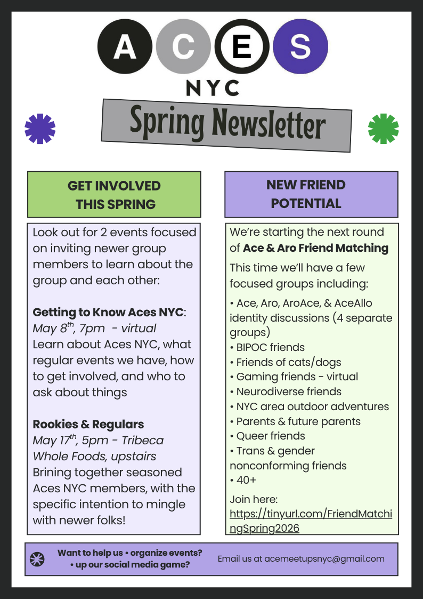
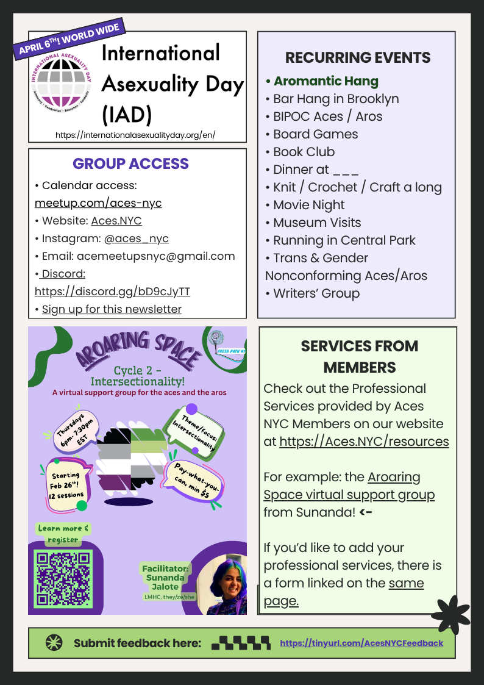

Aces NYC is a group of asexual people and allies who like to get together in person in and around New York City.
Check out our Ace Resources page for information about what asexuality is.
Aces NYC focuses on building face to face connections, and during COVID-19
online connections, and
community. We have a variety of hosts who regularly schedule events including:
- Aromantic Hangs
- Bar Hangs
- BIPOC Aces / Aros
- Board Games
- Book Club - see their recommendations here
- Dinner at ___
- Knit / Crochet / Craft a long
- Movie Night
- Museum Visits
- Running in Central Park
- Trans & Gender Nonconforming Aces/Aros
- Writers’ Group
In addition, we help with all Ace related events we can, such as The Ace & Aro Conference for 2019 WorldPride on the 50th Anniversary of the Stonewall Riots, joining local NYC events, The Ace Un-Conference: AVEN CAKE and work to reach out to other groups of aces neighboring cities. If you'd like to get involved, or host events, let us know!
We hope to see you soon!
Feel free to contact us at acemeetupsnyc@gmail.com or join our meetup group at meetup.com/aces-nyc.
Check out our latest newsletter here:

